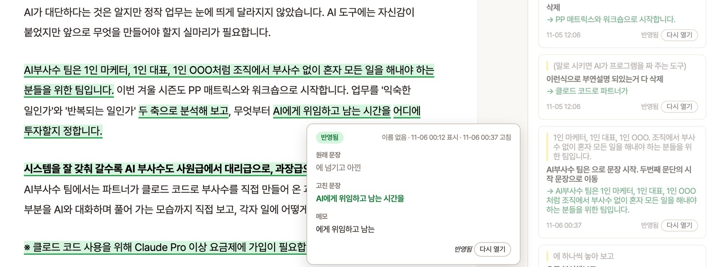

5회차 · ③ 영역 · 가끔 하는 일, AI와 나눠서 하기
26가을 AI부사수(TUE) 5회차 · 11월 10일 (화) 19:30 · 5층 오아시스덕수궁 · @Seulki.log
③ 영역은 가끔 하지만 내가 가장 잘 아는 일입니다. 고칠 곳과 순서를 규칙으로 적어 두면 AI가 그대로 합니다. 결과를 확인하고 보내는 버튼을 누르는 일은 내가 합니다.
돌아보기
4회차 4L과 지난 2주 동안 써 본 경험을 나눕니다.
AI 소식
11월 10일 공개된 페이블 5.2와 Gemini 대화창에서 문서를 만드는 기능을 소개합니다.
제 사례 · AI가 한 일과 내가 한 일
멤버 팀 이동, 시즌 전환, 상사께 드리는 보고, 검토 페이지 사례를 공유합니다.
지난 대화에서 규칙 찾기
쉬는 시간
실습과 4L 회고
CLAUDE.md에 일하는 규칙을 넣고, 다른 AI인 Codex에게 결과물을 한 번 더 검토받습니다. 마지막에 한 분씩 공유하고 4L을 적습니다.
| 회차 | 한 일 |
| 1회차 · 9월 15일 (화) | 클로드 코드가 무엇인지 배우고, AI에게 넘기고 싶은 일을 하나씩 떠올렸습니다. |
| 2회차 · 9월 29일 (화) | VS Code와 클로드 코드를 설치하고, 업무 스무 가지를 PP 매트릭스로 파악했습니다. |
| 3회차 · 10월 13일 (화) | ① 영역의 일을 골라 스킬로 만들어 직접 돌려 봤습니다. |
| 4회차 · 10월 27일 (화) | ② 영역 스킬에 검토 체크리스트를 넣었습니다. AI가 먼저 스스로 검토하고 나에게 넘깁니다. |
| 5회차 · 오늘 | ③ 영역의 일에서 일하는 규칙을 찾아 CLAUDE.md에 적고, 다른 AI에게 한 번 더 검토를 받습니다. |
| 6회차 · 11월 24일 (화) | ④ 영역에 있는 미뤄 둔 일을 기획부터 완성까지 해 보고, 시즌 동안 받은 스킬을 한 번에 돌아봅니다. |
오늘의 목표 다음에 같은 일을 할 때 AI가 먼저 읽을 규칙 두 줄을 CLAUDE.md에 넣습니다. 그리고 결과물 한 가지를 Codex에게 검토받아, 틀린 곳이 있는지 직접 확인합니다.
| 회차 | 실습으로 만든 것 | AI 소식 | 소개한 스킬과 도구 | 받은 스킬 |
| 1회차 · 9월 15일 | AI에게 넘기고 싶은 일 하나 | AI가 틀리는 이유, 요즘 자주 듣는 세 단어 | 제 스킬 /wed, 인스타 저장글 정리 스킬 | 없음 |
| 2회차 · 9월 29일 | 클로드 코드 설치, 캘린더 조회 스킬, 업무 스무 가지로 채운 PP 매트릭스 | 설치에 집중해 다루지 않았습니다 | 깃허브의 스킬 모음 k-skill | /recap |
| 3회차 · 10월 13일 | ① 영역 스킬 | 클로드 세 모델의 새 버전, ChatGPT와 Gemini의 무료 사용 조건 | Codex, Aside, Orca, Headroom | 업무일지 키트 · 10월 18일 슬랙 |
| 4회차 · 10월 27일 | ② 영역 스킬의 검토 체크리스트 | 시키지 않아도 알아서 일하는 AI, 클로드 비서 앱, 팀원과 AI가 함께 고치는 문서 | 글 검수 훅, /eli5, ponytail, caveman, graphify, karpathy-guidelines | 6회차에 한꺼번에 드립니다 |
| 5회차 · 오늘 | CLAUDE.md 규칙 두 줄, Codex에게 검토받은 결과물 | 페이블 5.2, Gemini 문서와 슬라이드, ChatGPT와 Codex가 함께 쓰는 사용량 한도, AI가 대신하지 못하는 것 | /insights, claude-md-management, Codex 설치 | 피드백 · 자료 키트, hfk-verify, hfk-worklog |
| 6회차 · 11월 24일 | ④ 영역의 미뤄 둔 일을 기획부터 완성까지 | 11월 11일부터 2주 동안의 소식 | superpowers, frontend-design, design-taste, /insights 리포트 비교 | 남은 스킬과 스타터 모음 |
앞 회차에 소개한 도구가 다음 실습으로 이어집니다 3회차에 함께 쓰면 좋은 도구로 소개한 Codex로 오늘 검토 실습을 합니다. 받은 스킬은 6회차에 시즌 전체를 돌아보며 한 번에 정리합니다.
늘 사례를 보는게 너무 흥미롭습니다! 대답을 미리 써준게 너무 재밌었어요 ㅎㅎ사진을 골라준것도!
컴퓨터 2개를 사용하는 건 부지런함이 필수인 것 같습니다. 우선 코워크로 시도해보겠습니다...!
따끈따끈한 AI 트렌드 공유는 나만의 세상에 광각 렌즈를 달아준다.
직접 해보지 않으면 잊는다. aside도 까먹었다. 완벽하지 않아도 일단 해보고 디벨롭 한다.
앞선 3회차의 내용들이 머리속에서도 어느 정도 방법론적으로 정리가 되어있다는 걸 느껴서 뿌듯했습니다!
확정된 건에 대한 담당자별 확정 안내 메일 스킬을 추가로 진행해보기!!
그래서 오늘은 실습을 70분으로 잡았습니다 강의는 짧게 하고, 마지막 4L은 실습이 끝난 뒤 따로 10분을 드립니다. 지난 2주 동안 ② 영역 스킬을 실제 일에 써 보신 분은 어떤 곳을 고쳤는지 한 분만 들려주세요.
③ 영역은 가끔 하지만 내가 가장 잘 아는 일입니다. 기준은 이미 머릿속에 있지만, 가끔 하니까 다음번에는 순서를 잊습니다. 작업 기록과 규칙을 워크스페이스인 작업 폴더에 쌓아 매번 처음부터 설명하지 않게 합니다.
자주 반복하고 내가 가장 잘 아는 일입니다.
제 스킬: /wed · /add-contacts
자주 반복하지만 더 잘하고 싶은 일입니다.
제 스킬: /generate-letter · /post-linkedin
가끔 하지만 내가 가장 잘 아는 일입니다.
예: 분기마다 하는 정산, 1년에 두 번 하는 행사 준비 | 제 스킬: /move-member · /handover-season
해 본 적 없는, 미뤄 둔 일입니다.
제 스킬: /expand-idea · /watch-instagram
③ 영역에서 AI가 하는 일 내가 적어 둔 규칙과 지난 기록을 먼저 읽고 순서대로 일합니다. 틀리면 문제가 커지는 곳에서는 멈추고 나에게 확인을 받습니다.
4회차에는 '내가 꼭 확인하는 것 세 가지'를 적었습니다. 그러나 ② 영역의 일은 아직 부족한 부분이 있어 무엇을 볼지 바로 떠오르지 않습니다. 선배에게 잘된 예를 묻듯, AI에게 기준 후보를 먼저 받아서 고릅니다. 11월 1일 일요일 반은 같은 방법으로 실습했습니다.
4회차에 만든 '(② 영역 스킬 이름)' 스킬을 열어 주세요.
같은 일을 잘하는 사례와 흔히 쓰는 기준을 바탕으로, 잘됐는지 볼 기준 후보 다섯 가지를 이유와 함께 보여 주세요. 제가 그중 세 가지를 고르겠습니다.
고른 세 가지가 지금 체크리스트와 다르면, 바꿀 줄만 먼저 보여 주세요.
이어 가는 도구는 2회차에 이미 드렸습니다 2회차 선물 /recap은 길어진 대화를 정리해 다음 대화로 넘겨 줍니다. 가끔 하는 일일수록 끝날 때 /recap을 한 번 쳐 두면, 다음번에 처음부터 설명하지 않아도 됩니다.
11월 10일 새벽, 앤트로픽이 새 모델 페이블 5.2를 공개했습니다.
Gemini 대화창에서 문서와 슬라이드를 바로 만드는 기능도 생겼습니다.
오늘 실습할 Codex는 12월부터 ChatGPT와 사용량을 함께 씁니다.
앤트로픽 CEO가 꼽은, AI가 대신하지 못하는 것도 함께 소개합니다.
지금까지는 AI에게 받은 글을 복사해 문서 프로그램에 붙여 넣었습니다. 이제 Gemini 앱에 '이 내용으로 슬라이드 만들어 줘'라고 하면, 대화창 안에서 파일을 만들고 미리 보여 줍니다.
문서, 슬라이드, 시트, PDF를 만들고 만든 화면에서 바로 고칩니다. 슬라이드는 Google Slides로 열거나 PPTX, PDF로 받습니다.
무료 개인 계정에서도 씁니다. PDF는 휴대폰에서도, 나머지는 웹에서만 됩니다.
슬라이드 옆 창에 한 번 지시하면 덱 전체의 글꼴과 색을 맞추고, 드라이브 자료를 넣어 고칩니다.
지금은 영어로만 지시할 수 있고, 회사용 유료 요금제부터 씁니다. 모든 계정에 퍼지기까지 15일 넘게 걸릴 수 있습니다.
만드는 일은 점점 쉬워집니다 오늘 주제인 확인이 더 중요해집니다. 파일은 AI가 몇 초 만에 만들어도, 숫자와 날짜가 맞는지 확인하고 보낼지 정하는 일은 여전히 내가 합니다.
12월부터 Plus, Pro, Business 요금제는 ChatGPT와 Codex가 사용량 한도를 같이 씁니다. 짧은 답을 빨리 주는 Instant 대화는 한도에서 빠집니다.
11월 2일 보도와 오픈AI가 사용자에게 보낸 메일 기준이며, 아직 시작 전입니다.
10월 27일부터 아이클라우드 메일을 찾고, 받은편지함을 정리하고, 일정을 확인하고 고칩니다. 모든 요금제에서 씁니다.
10월 28일, 회사 계정 관리자가 팀이 Claude로 한 일과 쓴 비용을 리포트로 봅니다. 팀이 함께 쓰는 월 예산도 정합니다.
클로드 코드가 고칠 수 있는 범위를 정하는 설정이 생겼습니다 10월 30일부터 AI가 작업 폴더 밖의 파일을 고치지 못하게 막는 설정을 켤 수 있습니다. 클로드 코드에 '작업 폴더 밖에는 파일을 쓰지 못하게 설정해 줘'라고 하면 됩니다. 10월 31일부터는 VS Code 채팅창에서 바로 로그인도 됩니다.
아모데이는 블룸버그 인터뷰에서 소프트웨어를 빨리 만드는 능력은 더는 방어벽이 아니라고 했습니다. 대신 고객과의 관계, 업계 노하우, 그 회사만 아는 지식을 꼽았습니다.
가진 방어벽을 전부 적어 보라고 조언했습니다.
10월 31일, AI 연구자 안드레이 카파시가 새 영상 사이트를 열었습니다. 해커뉴스 댓글에서 추천받은 영상 6,454개를 150개 주제로 묶었습니다. 만드는 일은 클로드가 했고, 본인은 자료와 서버, 도메인만 준비했습니다.
hackertube.org
10월 19일 Artificial Analysis가 같은 질문 900개로 AI가 답하는 성향을 비교했습니다. 답의 근거와 한계를 밝히는 투명성은 100을 기준으로 GPT-6 Astra 94, Claude Opus 5.5 88, Gemini 4 Argon 18이었습니다.
오늘 다른 AI에게 한 번 더 검토받는 이유이기도 합니다.
Basic Memory는 AI가 지난 결정과 기록을 기억하게 합니다. SilverBullet은 혼자 쓰는 위키이고, Docmost는 팀이 함께 쓰는 위키입니다.
셋 다 무료로 공개된 프로그램이지만, 설치에 개발 도구가 필요해 이름만 소개합니다.
오늘 적을 규칙이 내 방어벽입니다 AI를 바꿔도 CLAUDE.md에 적어 둔 일하는 규칙은 계속 통합니다. 오늘 실습에서 첫 규칙을 적습니다.
앤트로픽이 한국 시각 11월 10일 새벽 4시에 페이블 5.2를 공개했습니다. 답하는 속도는 페이블 5.1보다 최대 30% 빠릅니다. 유료 요금제 사용자는 클로드 앱과 클로드 코드의 모델 목록에서 페이블 5.2를 바로 선택합니다.
Pro 요금제 사용자는 주간 사용량의 50%까지 페이블을 사용합니다. 이번 주에는 앤트로픽이 대상 유료 요금제에 페이블 사용량을 추가로 제공합니다.
클로드가 구글 문서와 시트를 직접 열어 읽고 수정합니다. 데이터가 바뀌면 숫자가 자동으로 갱신되는 대시보드도 만듭니다. 클로드 코드에서는 질문에 ultrathink를 함께 적으면 어려운 문제를 더 깊이 검토한 뒤 답합니다.
세 기능 모두 Pro 요금제부터 사용합니다.
영상 AI 서비스 힉스필드를 클로드에 연결하면 채팅만으로 영상 색감을 보정합니다. 배경을 지워 인물만 떼어 내고, 화면을 지나가는 행인도 지웁니다.
힉스필드의 광고 게시물을 바탕으로 소개합니다. 사용하려면 힉스필드 계정이 별도로 필요합니다.
평소 업무에는 Opus 5.5를 먼저 씁니다 앤트로픽도 대부분의 코딩과 업무에는 Opus 5.5부터 쓰라고 추천합니다. 페이블은 시간이 오래 걸리는 어려운 작업에만 사용합니다.
일론 머스크는 2027년까지 사무직 업무부터 AI가 대신하고, 2036년에는 돈이 의미를 잃는다고 예측했습니다. 용접, 배관, 요리처럼 몸을 쓰는 일은 훨씬 오래 유지된다고 봤습니다.
머스크가 말한 시기는 1년 사이에도 여러 번 늦춰졌습니다. 엔비디아의 젠슨 황은 AI 덕분에 일이 오히려 늘어난다고 전망합니다.
스탠퍼드 경제학자 에릭 브린욜프슨은 EBS 특강 〈넥스트 비전〉에서 AI로 인력을 줄이는 기업보다 할 수 있는 일을 늘리는 기업이 더 오래간다고 말했습니다.
AI로 새로 할 수 있게 된 업무를 함께 떠올립니다.
인스타그램 계정 인생책장은 같은 시간을 일해도 AI를 활용하는 사람과 그렇지 않은 사람의 생산성 차이가 커진다고 말합니다. 앞으로는 지식보다 배우는 속도가 중요하다는 주장입니다.
AI가 할 일과 내가 확인할 일을 나눕니다 세 글 모두 AI가 맡는 일이 늘어난다고 전망합니다. 오늘 실습에서는 AI가 따를 규칙을 CLAUDE.md에 적고, 내가 직접 확인할 일을 정합니다.
제 ③ 영역의 일은 한 시즌에 한두 번 하지만, 틀리면 여러 곳에서 한꺼번에 문제가 생깁니다.
고칠 곳과 순서를 규칙으로 적어 두니 AI가 그대로 했습니다. 결과를 확인하고 보내는 버튼은 제가 눌렀습니다.
멤버가 시즌 중에 다른 팀으로 옮기는 일은 한 시즌에 서너 번 있습니다. 가끔 하는 일이라, 할 때마다 무엇을 고쳐야 하는지 다시 떠올려야 했습니다. 26가을 시즌을 시작할 때 세 분이 팀을 옮겼습니다.
명령 한 줄에 이름, 원래 팀, 옮길 팀만 넣으면 적어 둔 순서대로 고칩니다.
AI는 먼저 미리 돌려 보고 바뀔 줄을 보여 줍니다. 제가 확인해야 실제로 고칩니다.
9월 3일 한 건은 결제, 시트, 슬랙은 이미 바뀌어 있었고 출석 시트만 빠져 있었습니다. 확인 단계에서 출석 시트만 채웠습니다.
가끔 하는 일은 그사이 바뀐 것부터 봅니다 8월 27일에 점검해 보니, 스킬이 두 시즌 전의 출석 시트를 보고 있었습니다. 대상을 못 찾아도 경고 한 줄만 남기고 끝난 것처럼 보였습니다. 그래서 '고치기 전에 지금 시즌이 맞는지 먼저 확인한다'를 규칙으로 넣었습니다.
시즌을 넘길 때는 지난 시즌 채널을 정리하고, 정산하고, 새 시즌 채널을 만들고, 멤버를 초대합니다. 석 달에 한 번이라 매번 무엇인가 빠졌습니다. 8월과 9월에 살펴보니 아무 경고 없이 빠져 있던 것이 17가지였습니다.
12단계마다 앞 단계를 확인해야 다음 단계로 갑니다. 확인이 실패하면 멈춥니다. 파트너께 보내는 글은 제가 승인해야 나갑니다.
8월 27일 26가을 전환: 새 채널 23개, 초대 1,401건, 실패 0건
끝난 시즌 폴더의 파일을 계속 쓸 것, 근거로 남길 것, 지울 것 셋으로 나눕니다. 밖으로 나갔는지는 짐작하지 않고 슬랙과 메일 기록으로 확인합니다. 지우는 것은 제가 표를 보고 정합니다.
8월 14일 결과물 폴더에 쌓인 파일 1,489개를 정리하면서 만들었습니다.
아직 스킬로 처음부터 끝까지 돌려 보지는 않았습니다 두 스킬 모두 일을 마친 날 과정을 적어 만든 것입니다. 다음 시즌 전환 때 처음으로 스킬로 돌립니다. 한 줄 더: 조회수 리포트를 뽑는 /ga-report도 ③ 영역 스킬입니다.
4회차에 소개한 매주 수요일 진행 보고에 이어, 상사께 드리는 답장까지 같은 규칙으로 쓰게 했습니다. AI는 초안을 쓸 때마다 규칙 파일부터 읽습니다.
번호를 붙인 선택지, 추천안과 이유 한 줄, 답 기한을 적습니다. 번호만 적어 답하실 수 있게 씁니다.
8월 30일 환불 방식 결정은 이렇게 여쭈어 4분 만에 답을 받았습니다.
상사 메시지 길이의 가운데 값은 48자입니다. 스레드 답 182건 중 38건이 '네네'였습니다. 배경 설명은 댓글로 뺍니다.
밤 9시 뒤에는 결정을 여쭈지 않습니다. 밤늦게 제가 승인하면 다음 날 아침 9시에 올립니다.
4회차에 소개한 고친 곳 모으기는 계속 돌고 있습니다 10월 28일에는 '이번 주에는 결정해 주실 일도, 부탁드릴 일도 없습니다'라는 줄을 지웠습니다. 다음 초안부터 같은 줄이 빠집니다.
상사께 가는 글은 반드시 초안을 거칩니다. 보내는 버튼은 제 계정으로 제가 누릅니다. 봇이 보내면 상사께는 봇이 답한 것처럼 보이기 때문입니다.
초안: '네, 후기를 10월 30일(금) 오전에 공개로 바꾸겠습니다.' 로 시작하는 세 줄
보낸 글: '넵넵 그럼 바로 공개로 올릴게요 ㅎㅎ'
초안은 상사의 말투보다 늘 깁니다 규칙에 '짧게'를 적어 두어도 그렇습니다. 그래서 무엇을 답할지, 얼마나 짧게 답할지는 제가 정합니다. 매주 수요일 진행 보고도 세 번 중 두 번은 고쳐서 올렸고, 한 번은 올리지 않았습니다.
상세페이지를 검토할 때 저는 검토 페이지에 고칠 곳을 표시해 둡니다. 표시를 반영하라고 하면 AI는 원본만 고치고, '배포할까요?', 'PDF도 다시 만들까요?'를 따로 물었습니다. 10월 29일 저녁에 같은 말을 몇 번째 하다가 이렇게 적었습니다.
확인받으면 한 번에 끝까지 합니다. 원본 고치기, 실제 페이지에 올리기, 올라갔는지 확인, PDF 다시 만들기, 검토 페이지 갱신까지입니다.
10월 30일부터 11월 3일까지 여섯 번, 한 번도 다시 묻지 않고 끝났습니다.
고칠 곳을 표시하는 일과 '배포'라고 말하는 일은 제가 합니다.
빈틈도 한 번 있었습니다. 11월 2일 한 세션이 검토 페이지 상태를 '검토 중'으로 남겼고, 다음 날 다른 세션이 찾아 고쳤습니다.
같은 말을 세 번 하면 규칙으로 적을 때입니다 제가 AI에게 반복해서 하는 말이 곧 적어 둘 규칙입니다. /insights 리포트도 확인하지 않고 끝났다고 말한 일을 짚었습니다. 다음 순서인 규칙 찾기에서 리포트를 보여 드립니다.

VS Code 탭에서 고칠 문장을 드래그하고 메모를 적습니다. 10월 23일부터 11월 6일까지 표시 656건을 남겼습니다.
수정사항 반영 버튼을 누르면 클로드가 별도 세션에서 노트를 고치고, 글을 검수하고, 결과를 업무일지에 적습니다.
메모만으로 정할 수 없는 표시는 고치지 않고 저에게 되묻습니다. 실제 페이지에 올리는 일과 PDF는 세션이 하지 않습니다.
11월 5일 시험에서 5분 동안 표시 13건 중 11건을 반영했고, 2건은 저에게 되물었습니다.
표시도 규칙이 됩니다 표시 557건을 13가지 유형의 교정 사례집으로 묶었고, 세션은 고치기 전에 사례집부터 읽습니다. 제 맥에서만 돌아가는 도구라 오늘은 사례로만 소개합니다.
오늘 실습은 규칙 적기와 한 번 더 검토받기, 두 가지입니다 4회차에는 내보내는 일을 사람이 맡는다고 정리했습니다. 오늘은 실습 1에서 AI가 따를 규칙을 CLAUDE.md에 적고, 실습 2에서 내보내기 전 결과물을 다른 AI에게 한 번 더 검토받습니다.
클로드 코드는 지난 대화 기록으로 내가 일하는 방식을 리포트로 정리해 줍니다.
리포트에서 자꾸 고친 곳을 찾아 CLAUDE.md에 규칙으로 적습니다.
/insights → CLAUDE.md → claude-md-management → 피드백 · 자료 키트
5월 31일부터 10월 27일까지 다섯 달 동안의 대화 818개를 분석한 리포트입니다. 마지막에 'CLAUDE.md에 추가할 만한 규칙'을 따로 적어 줍니다. 가장 자주 차이가 난 곳 세 가지와 제가 한 일입니다.
| 리포트가 짚은 곳 | 리포트가 준 규칙 | 제가 한 일 |
| 말하지 않은 것을 AI가 짐작으로 채웠습니다. 멤버용 키트를 맥 기준으로 만들었습니다. 멤버는 윈도우를 씁니다. | 멤버에게 줄 결과물은 비개발자와 윈도우 기준으로 만듭니다. | 아직 넣지 않았습니다. 오늘 실습 1에서 같이 넣습니다. |
| 확인하지 않고 안 된다고 말했습니다. 스포티파이 연결이 되어 있지만 없다고 했습니다. | 찾아본 결과를 다 읽기 전에는 없다고 말하지 않습니다. | 10월 1일 '연결돼 있다'를 규칙으로 적었습니다. |
| 고치라고 한 곳보다 넓게 고쳤습니다. 제가 고쳐 둔 덱을 AI가 덮어썼습니다. | 덱을 고치기 전에 최근에 누가 고쳤는지 보고, 있으면 묻습니다. | 10월 20일 '배포 전에 최신본과 비교한다'를 넣었습니다. |
잘한 일도 적어 줍니다 Codex에게 업무일지 키트를 검토받아 버그 9개를 찾은 일을 꼽았습니다. 비밀번호 같은 값이 기록에 남을 수 있던 버그도 있었습니다. 실습 2에서 같은 검토를 해 봅니다.
/insights 를 칩니다.2회차에 설치하셨으니 오늘이면 6주 동안의 대화가 쌓였습니다.
6회차에 한 번 더 돌립니다 오늘 넣은 규칙이 2주 뒤 리포트에서 어떻게 달라졌는지 비교해 봅니다.
클로드 코드가 대화를 시작할 때마다 가장 먼저 읽는 메모입니다. 작업 폴더 맨 위에 둡니다. 신입에게 주는 인수인계 메모처럼, 짧을수록 잘 지킵니다.
양식은 나는 누구인지, 결과물은 어디에 두는지, 일하는 방식, 하지 않을 것 네 항목입니다.
넣어 둘 만한 규칙 예: 대화가 길어지거나 요약된 뒤에는 오늘 업무일지부터 읽고 이어 갑니다.
CLAUDE.md가 길어지거나 지금 하는 일과 맞지 않게 되면 점수를 매기고 고칠 곳을 알려 줍니다.
/revise-claude-md 를 치면, 이번 대화에서 배운 점을 CLAUDE.md에 넣자고 제안합니다.설치
클로드 코드 채팅창에 한 줄씩/plugin marketplace add anthropics/claude-plugins-official/plugin install claude-md-management@claude-plugins-official
창을 새로 열면 클로드는 지난 대화를 기억하지 못해서, 같은 말을 여러 번 하게 됩니다. 키트는 일하는 동안 세 가지를 작업 폴더에 쌓고, 클로드는 일을 시작할 때마다 규칙과 자료를 먼저 읽습니다.
memory/MEMORY.md
내가 고쳐 준 말이 규칙 파일로 쌓입니다. '표는 3열까지만 써 줘', '확인 안 된 금액은 지어내지 마' 같은 말입니다.
이번 한 번만 필요한 말은 저장하지 않습니다.
자료/목록.md
내가 건넨 링크와 파일이 날짜와 함께 한 줄씩 적힙니다.
지난주에 건넨 시트 링크를 다시 찾아 붙여 넣지 않아도 됩니다.
worklog 폴더
클로드가 한 일이 날짜별 파일로 적힙니다. 왜 했는지, 무엇을 고쳤는지, 어떻게 확인했는지를 씁니다.
묻고 답하기만 한 대화는 기록하지 않습니다.
키트는 쌓고, CLAUDE.md에는 내가 고릅니다 키트에 쌓인 규칙 가운데 꼭 지킬 것만 골라 CLAUDE.md에 30줄 안으로 적습니다. 실습 1에서 규칙을 정리합니다.
훅은 정해진 순간마다 저절로 도는 장치입니다. 4회차에 소개한 글 검수 훅과 같은 방식입니다.
쉬는 시간이 끝나면 바로 실습을 시작합니다.
VS Code에서 작업 폴더를 열고, 4회차 과제로 골라 오신 ③ 영역 일을 떠올려 두세요.
실습 1에서는 다음번에도 AI가 먼저 읽을 일하는 규칙을 CLAUDE.md에 적습니다.
실습 2에서는 결과물 한 가지를 다른 AI에게 한 번 더 검토받습니다.
실습 1 키트 설치와 규칙 넣기 20분 · 실습 2 Codex 검토 30분
VS Code에서 작업 폴더를 연 채로 아래쪽 터미널 창에 붙여 넣습니다. 마지막 줄 근처에 '설치 완료'가 보이면 끝입니다.
curl -fsSL https://thehfk.github.io/hfk-ai-bss/worklog-kit/install.sh | bash
[Net.ServicePointManager]::SecurityProtocol='Tls12'; iwr -useb https://thehfk.github.io/hfk-ai-bss/worklog-kit/install.ps1 -OutFile "$env:TEMP\hfk-kit.ps1"; powershell -NoProfile -ExecutionPolicy Bypass -File "$env:TEMP\hfk-kit.ps1" -ProjectDir "$PWD"
'파이썬 3.8 이상이 필요합니다'가 보이면 화면의 주소에서 파이썬을 설치합니다. 첫 화면 아래쪽 'Add python.exe to PATH'에 꼭 체크합니다.
설치한 뒤에는 클로드 코드를 껐다가 다시 켭니다 폴더를 믿을지 묻는 창이 뜨면 동의를 누릅니다. 동의해야 저장이 시작됩니다. 10월 18일에 업무일지 키트를 설치했어도 한 번 더 설치해 주세요. 쌓인 기록은 지워지지 않습니다. 회사 컴퓨터는 보안 설정 때문에 설치가 막힐 수 있습니다.
먼저 채팅창에 /insights 를 치고 리포트가 나오면 아래 문장을 붙여 넣습니다. 리포트가 비어 있어도 키트에 쌓인 규칙과 업무일지로 찾습니다.
방금 만든 /insights 리포트를 보고 CLAUDE.md에 넣을 규칙을 찾아 주세요. 질문은 한 번에 하나씩 해 주세요.
1. 제가 AI의 결과를 자주 고친 곳 세 가지를 보여 주세요. memory/MEMORY.md에 쌓인 규칙도 같이 봐 주세요. 리포트가 비어 있으면 작업 폴더의 업무일지와 결과물을 보고 찾아 주세요.
2. 각각을 CLAUDE.md에 넣을 규칙 한 줄로 바꿔 주세요. 제가 두 개를 고르겠습니다.
3. 제 ③ 영역 일인 '(③ 영역 업무 이름)'을 다음에 할 때 잊기 쉬운 순서와, 틀리면 문제가 커지는 곳을 물어봐 주세요. 답을 규칙 한두 줄로 적어 주세요.
4. CLAUDE.md가 없으면 hfk-ai-starter의 30줄 양식으로 새로 만들어 주세요. 30줄을 넘기지 마세요.
5. 저장하기 전에 바뀌는 줄만 먼저 보여 주세요. 원래 있던 내용은 지우지 마세요.
확인하는 법 새 대화를 열고 '내 CLAUDE.md에 적힌 규칙을 말해 줘'라고 해 보세요. 방금 넣은 두 줄을 말하면 됩니다.
내가 쓴 글을 내가 검토하면 같은 착각을 두 번 합니다. AI도 같습니다. 클로드가 만든 것을 오픈AI의 Codex에게 다시 보게 합니다. 저는 한 번 나가면 되돌릴 수 없는 프로그램을 고칠 때만 Codex가 저절로 검토하게 해 두었습니다. 문자 발송, 정산, 배포 프로그램입니다.
하나는 맞았습니다. 신청자 안내 메일 프로그램이 멈춰 있어도 '자동 발송 중'이라고 보여 주고 있었습니다. 다시 돌려 확인하고, '아직 안 나간 사람 N명'을 알리게 고쳤습니다.
나머지 한 곳은 다른 대화에서 만들던 파일이라 그대로 두었습니다.
맞는지 정하는 일은 사람이 합니다 Codex의 지적도 틀릴 수 있습니다. 검토는 한 번 더 멈춰서 확인하는 단계이고, 고칠지는 제가 정합니다. 클로드 쪽에는 '다 됐습니다'라고 말하기 전에 확인을 다시 돌려 증거를 보이게 하는 스킬도 있습니다. superpowers 묶음의 verification-before-completion입니다.
VS Code 아래쪽 터미널 창에 붙여 넣습니다.
curl -fsSL https://chatgpt.com/codex/install.sh | sh
새 PowerShell 창을 열고 붙여 넣습니다.
powershell -ExecutionPolicy ByPass -c "irm https://chatgpt.com/codex/install.ps1 | iex"
터미널에 codex 를 치고 Sign in with ChatGPT를 고릅니다. 브라우저가 열리면 ChatGPT 계정으로 로그인합니다. 로그인되면 /exit 로 나옵니다.
ChatGPT Plus 요금제부터 씁니다 ChatGPT 요금제는 4회차에 미리 확인을 부탁드렸습니다. 요금제가 없는 분은 제 화면으로 함께 보시고, 실습 2의 문장은 그대로 따라 쳐 보세요. Codex가 없으면 클로드가 반대 근거를 직접 찾아 검토합니다.
4회차에 만든 결과물이나 최근에 쓴 보고서 한 편을 고릅니다. 회사 파일이 없으면 '연습용 주간 보고서를 만들어 줘'라고 먼저 만들어도 됩니다. 클로드 코드 채팅창에 붙여 넣습니다.
'(파일 이름)'을 Codex에게 한 번 더 검토받고 싶습니다.
1. 파일에서 숫자, 날짜, 이름, 단정하는 문장만 뽑아 목록을 만들어 주세요. 의견과 제안은 빼 주세요.
2. 고객 이름이나 연락처가 있으면 넘기기 전에 지워 주세요.
3. 목록을 codex exec로 넘겨 주세요. 맞으면 확인, 틀리면 무엇이 틀렸는지, 모르면 확인 불가로 답하게 하고, 동의하기 전에 반례부터 찾게 해 주세요.
4. 결과를 확인, 틀림, 확인 불가 세 칸 표로 보여 주세요.
5. 원래 파일은 고치지 마세요. 틀림이 있으면 고칠지 저에게 물어봐 주세요.
확인 불가가 나와도 괜찮습니다
원본을 직접 열어 맞춰 볼 곳을 알려 준 것입니다. 코드를 쓰는 분은 Codex 창에서 /review 를 치면, 파일을 고치지 않고 바뀐 곳의 문제만 순서대로 알려 줍니다. 같은 일을 여러 AI에게 같이 시켜 비교하는 Orca라는 앱도 있습니다.
'내보내기 전에 검증해 줘'라고 하면 실습 2의 순서를 그대로 합니다. 결과는 확인, 틀림, 확인 불가로만 나누고, '대체로 맞다'처럼 두루뭉술하게 줄이지 않습니다.
상사, 고객, 외부로 나가는 글에만 씁니다. 매번 돌리면 결국 안 돌리게 됩니다.
4회차 과제로 드린 하루 한 줄 기록입니다. 키트를 설치했다면 업무일지가 저절로 쌓여 따로 쓰지 않아도 됩니다. 쌓인 기록은 다음번 /insights의 재료가 됩니다.
넣는 법 클로드 코드에 '링크의 스킬을 작업 폴더에 넣어 줘'라고 하고 링크를 붙여 넣습니다. 나머지 선물은 6회차에 시즌 전체를 돌아보며 한꺼번에 드립니다.
CLAUDE.md에 넣은 규칙 두 줄 가운데 한 줄을 말씀해 주세요.
틀림이나 확인 불가로 나온 곳이 있었다면 말씀해 주세요.
③ 영역 일에서 AI에게 넘기지 않고 직접 하기로 한 것 한 가지를 말씀해 주세요.
같은 일을 하는 분이 있다면 서로의 규칙을 빌려 와 보세요. 내가 적지 않은 규칙이 보입니다.
6회차는 ④ 영역, 해 본 적 없는 미뤄 둔 일입니다. 기획부터 완성까지 해 보고, 시즌 동안 받은 스킬을 한 번에 돌아봅니다.
오늘 넣은 규칙 두 줄이 다음 대화에서 지켜지는지 한 번 이상 확인합니다.
pp-매트릭스.md의 ④ 영역에서, 그동안 하고 싶었지만 미뤄 둔 일 한 가지를 골라 옵니다.
6회차 전날인 11월 23일에 /insights를 한 번 더 돌려 오세요. 오늘 리포트와 비교합니다.
질문은 슬랙 스레드에 남겨 주세요 막힌 곳 한 줄이면 충분합니다. 6회차 자료에 반영하겠습니다.
슬랙 캔버스 4L 리뷰_26가을_AI부사수(TUE)의 5회차 칸에 적어 주세요.
좋았던 것
새로 알게 된 것
부족했던 것
가끔 하는 일은 순서를 규칙으로 적어 두면 다음번에 AI가 먼저 읽습니다.
같은 말을 세 번 하면 규칙으로 적을 때입니다.
틀리면 되돌릴 수 없는 곳에서는 한 번 멈추고, 보내는 버튼은 제가 누릅니다.
26가을 AI부사수(TUE) 5회차 · 11월 10일 (화) · @Seulki.log